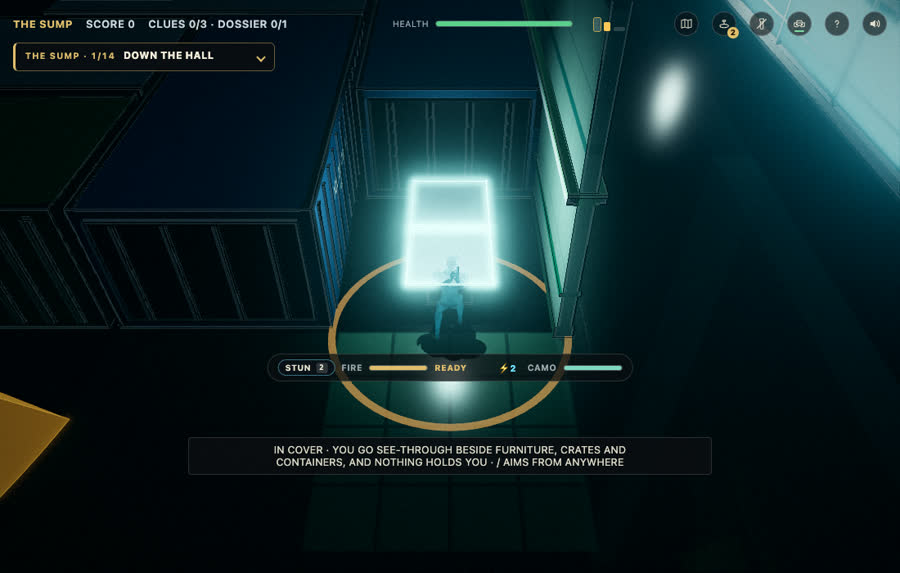
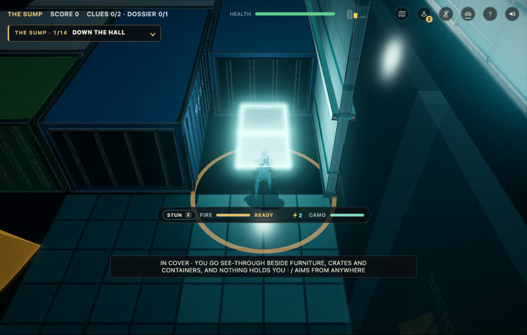
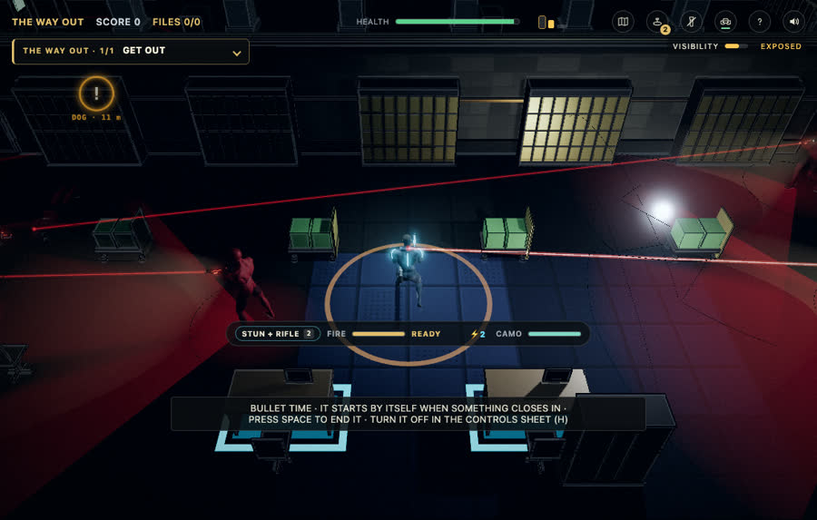
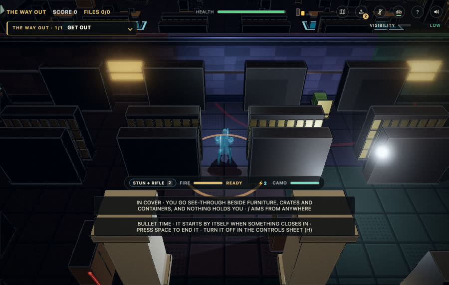

Pre-hackathon: partner on the tower, bunker and exit, lit bunker and exit, bunker stairs both ways
Input
(1) you wanted co-op from the start of the game on every level; (2) you asked for the bunker and the shootout to be well lit; (3) you found a bug: leave a task on a lower bunker level, go up, and you cannot come back down.
Output
- Co-op: the AI partner is switched on for the tower, bunker and exit (it was maze-only), with the first floor-to-floor routing.
- Lighting: bunker lit with cool strip light, the exit with warm light and every storey known; checked in before-and-after screenshots below (
?dark=1brings the bunker's darkness back). - Bunker stairs: cause found: a wall at the foot of each flight on the upper storey stopped anyone walking down, and the earlier test walkers hid it by teleporting. Fixed by opening that wall like the one at the head; verified on every flight of five bunker plans with real key presses, and the partner followed both ways. 842 tests pass.
In plain terms
the three things you asked for tonight, committed and tagged as the line between carried-over and new work.
| Bunker, before | Bunker, after |
|---|---|
 |  |
| Shootout exit, before | Shootout exit, after |
|---|---|
 |  |